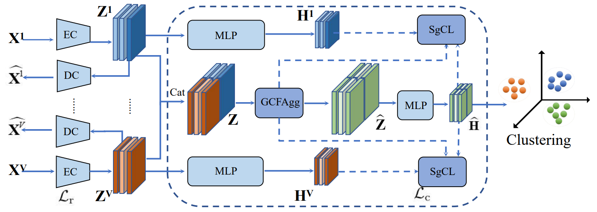
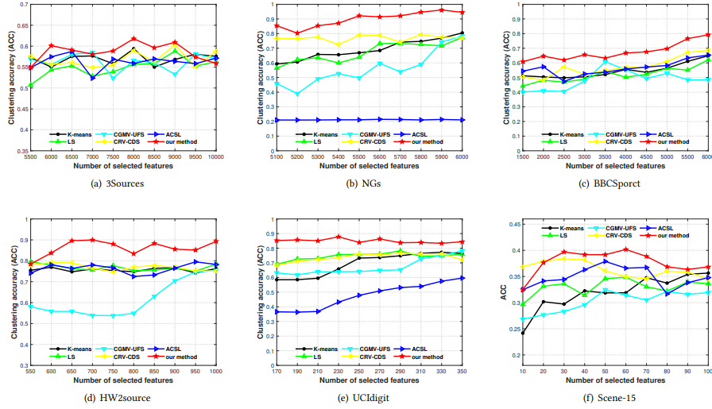
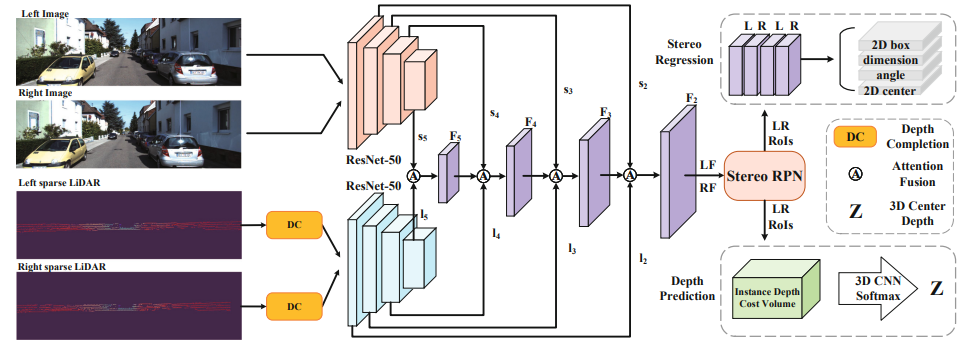
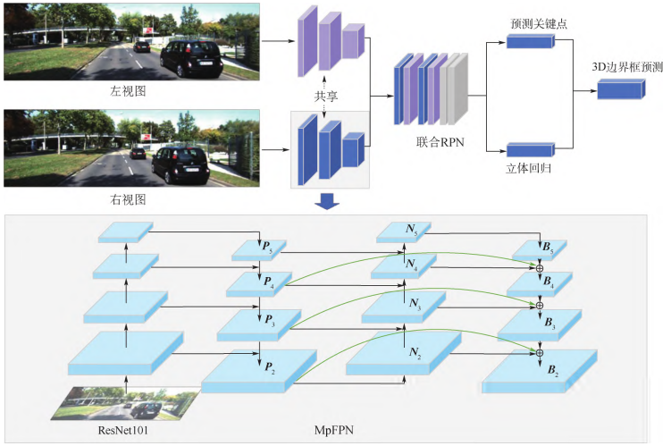

Weiqing Yan
|
|

Biography
I am an associate professor at Yantai University (YTU), and also a Postdoctoral Fellow at School of Computer Science and Engineering, Nanyang Technological University, Singapore.
My research interests include stereoscopic image editing, 3D computer vision, deep learning and multi-view feature selection.
From Sep 2015 to Sep 2016, I was a visiting student at University of California, Berkeley, (UC, Berkeley), working with Martin S. Banks. I have received my Ph.D. degree from School of Electronic Information Engineering, Tianjin University in 2017.
欢迎报考我的研究生，同时欢迎感兴趣的本科生加入我的课题组!!!
News
- [5/2023] One paper (Collaborative structure and feature learning for multi-view clustering) was accepted by Information Fusion.
- [2/2023] One paper (GCFAgg: Global and Cross-view Feature Aggregation for Multi-view Clustering) was accepted by IEEE CVPR.
- [11/2022] One paper (Graph-Filtering and High-Order Bipartite Graph based Multiview Graph Clustering) was accepted by Digital Signal Processing.
- [10/2022] One paper (Bipartite Graph-based Discriminative Feature Learning for Multi-View Clustering) was accepted by ACM MM, 2022.
- [10/2022] One paper (Sparse LiDAR and Binocular Stereo Fusion Network for 3D Object Detection) was accepted by Recognition and Computer Vision 2022.
- [10/2022] One paper (Stereo VoVNet-CNN for 3D Object Detection) was accepted by Multimedia Tools and Applications.
- [08/2022] One paper (3D object detection based on multi-path feature pyramid network for stereo images) was accepted by Journal of Beijing University of Aeronautics and Astronautics.
Selected Publications [Google Scholar]
*Student, †Corresponding Author
|  | Collaborative structure and feature learning for multi-view clustering. Weiqing Yan, Meiqi Gu*, jinlai Ren, Guanghui Yue, Zhaowei Liu, Weis Lin. Information Fusion, 2023.5.10 |
| GCFAgg: Global and Cross-view Feature Aggregation for Multi-view Clustering. Weiqing Yan, Yuanyang Zhang*, Chenlei Lv, Chang Tang†, Guanghui Yue, LiangLiao, Weis Lin. IEEE CVPR, 2023.2.28 |
|
|  | Bipartite Graph-based Discriminative Feature Learning for Multi-View Clustering. Weiqing Yan, Jindong Xu, Jinglei Liu, Guanghui Yue, Chang Tang. Proceedings of the 30th ACM International Conference on Multimedia (ACM MM), 2022. |
|  | Sparse LiDAR and Binocular Stereo Fusion Network for 3D Object Detection. Weiqing Yan, et.al. Pattern Recognition and Computer Vision, 2022. |

|
Stereo VoVNet-CNN for 3D Object Detection. Weiqing Yan, Kaiqi Su, Xuyang Wang, Jindong Xu. Multimedia Tools and Applications, 2022. |
|  | 3D object detection based on multi-path feature pyramid network for stereo images. Kaiqi Su*, Weiqing Yan†, et.al. Journal of Beijing University of Aeronautics and Astronautics, 2022. |

|
Shape-optimizing mesh warping method for stereoscopic panorama stitching. Weiqing Yan, Guanghui Yue, Jindong Xu, Yanwei Yu, Kai Wang, Chang Tang, Xiangrong Tong. Information Sciences, 2020. |

|
Perceptual objective quality assessment of stereoscopic stitched images. Weiqing Yan, Guanghui Yue, Yuming Fang, Hua Chen, Chang Tang, Gangyi Jiang. Signal Processing, 2020. |

|
Referenceless Quality Evaluation of Tone-Mapped HDR and Multi-Exposure Fused Images. Guanghui Yue, Weiqing Yan , Tianwei Zhou. IEEE Transactions on Industrial Informatics, 2020. |

|
Diversity and consistency learning guided spectral embedding for multi-view clustering. Zhenglai Li, Chang Tang, Jiajia Chen, Cheng Wan, Weiqing Yan, Xinwang Liu. Neurocomputing, 2019. |

|
Stereoscopic Image Stitching Based on a Hybrid Warping Model. Weiqing Yan, Chunping Hou, Jianjun Lei, and Nam Lin. IEEE Transactions on Circuits and Systems for Video Technology, 2017. |

|
Content-Aware Disparity adjustment for Different Stereo Displays. Weiqing Yan, Chunping Hou, Baoliang Wang and Laihua Wang. Multimedia Tools and Applications, 2017. |

|
Content- and disparity-adaptive stereoscopic image retargeting. Weiqing Yan, Chunping Hou, and Yuan Zhou and Wei Xiang. Journal of Modern Optics, 2016. |

|
Reducing Perspective Distortion for Stereoscopic Image Stitching[C]. Weiqing Yan, Chunping Hou. International Conference on Multimedia & Expo(ICME). IEEE, 2016 Seattle, USA. (Oral Presentation), 2016. |
Project-hosting
-
National Natural Science Foundation of China, 618014142019.01 – 2021.12
Role: PI
Topic: Stereoscopic panoramic image stitching technology based on unrestricted sampling.
-
National Natural Science Foundation of Shandong Province, ZR2017QF0062017.08 – 2019.12
Role: PI
Topic: Stereoscopic image stitching technology based on left view and right view images.
Teaching
| 2018.08-Now | Fall/Spring | C Programming (C语言程序设计) |

© Weiqing Yan | Last updated: Dec 2022